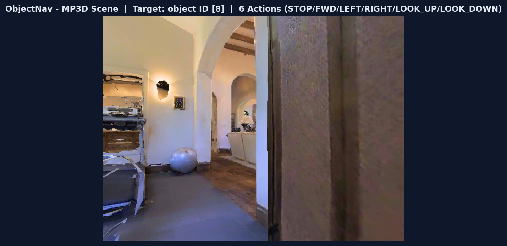
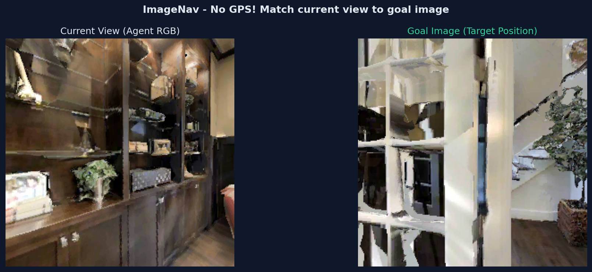

1. 导航任务全景：五种目标类型
PointNav 只是导航的起点。Habitat 支持 5 种目标类型——从几何坐标到语言指令，覆盖 Embodied AI 导航的全谱系。
🤔 如果给你一个坐标 (x,y) 让你走过去，和给你一张照片让你找到这个地方，哪个更难？为什么 Habitat 要设计五种不同的导航任务？
1.1 五种目标类型对比总表
| 任务 | 目标描述 | 目标传感器 | 动作数 | 核心数据集 | 评判指标 | 难度 |
|---|---|---|---|---|---|---|
| PointNav | 几何坐标 (x,y) | GPS + Compass (pointgoal_with_gps_compass) |
4 STOP/FWD/LEFT/RIGHT |
Gibson, MP3D, HM3D | success, SPL, distance_to_goal |
⭐⭐ |
| ObjectNav | 物体类别 (如 chair, bed) |
GPS + Compass + objectgoal (类别ID) |
6 +LOOK_UP/LOOK_DOWN |
HM3D, MP3D, HSSD, ProcTHOR |
success, SPL, softSPL, VIEW_POINTS 距离 |
⭐⭐⭐ |
| ImageNav | 一张目标图片 (goal image) |
目标 RGB 图像 (imagegoal_sensor) |
4 STOP/FWD/LEFT/RIGHT |
Gibson, MP3D (共用 PointNav 数据) |
success, SPL, distance_to_goal |
⭐⭐⭐ |
| InstanceImageNav | 特定实例图片 ("这把椅子", 非 "椅子类") |
目标实例图片 (instance_imagegoal) |
6 +LOOK_UP/LOOK_DOWN |
HM3D | success, SPL, softSPL, VIEW_POINTS 距离 |
⭐⭐⭐⭐ |
| VLN | 自然语言指令 ("通过厨房去卧室") |
指令文本 (instruction_sensor) |
4 STOP/FWD/LEFT/RIGHT |
MP3D (R2R) | success, SPL, nDTW (路径相似度) |
⭐⭐⭐⭐⭐ |
· PointNav = "走到 (x,y)" — 纯几何，GPS/Compass 告诉你相对位置 → 最简单的 RL 训练
· ObjectNav = "找到 chair" — 需要语义理解（chair 长什么样？它通常在哪？）
· ImageNav = "到达这里" — 需要视觉匹配（当前视野 vs 目标图片）→ 没有 GPS
· InstanceImageNav = "找到这把特定的椅子" — 需要实例级识别（区分同类的不同个体）
· VLN = "按指令去卧室" — 需要语言理解 + 视觉匹配 + 路径记忆 → 最接近真实机器人
1.2 PointNav — 几何坐标导航 难度 ★★
你不能穿墙，不知道城堡的地图，唯一知道的是：目标距离你多远、在哪个方向。
你要怎么一步步走过去？这就是 PointNav 要解决的问题。
| 概念 | 符号 | 含义 | 与代码的关系 |
|---|---|---|---|
| 相对距离 | ρ (rho) | agent 到目标的直线距离（米） | obs["pointgoal_with_gps_compass"][0] |
| 相对角度 | φ (phi) | 目标相对 agent 朝向的偏航角（弧度） | obs["pointgoal_with_gps_compass"][1] |
| 动作空间 | 4 离散 | STOP/MOVE_FWD/TURN_LEFT/TURN_RIGHT | env.action_space → Discrete(4) |
| 观测空间 | RGB+D+PG | 256×256 RGB + Depth + PointGoal(2,) | obs.keys() → ['rgb','depth','pointgoal...'] |
💻 实操：创建 PointNav 环境
核心任务：用 4 行代码创建 Habitat 环境 → 获取观测 → 查看目标信息。
关键点：import habitat.gym 不是装饰——它触发了 Habitat-v0 的注册，没有这一行，gym.make("Habitat-v0") 会报错。
| 代码段 | 作用 | 关键点 |
|---|---|---|
import gym, habitat.gym | 导入 Gym API + 注册 Habitat-v0 | habitat.gym 必须导入，否则 gym.make 找不到环境 |
gym.make("Habitat-v0", cfg=...) | 根据配置文件创建环境实例 | 指定场景、传感器、任务参数 |
obs = env.reset() | 重置环境 + 返回初始观测 | 返回 dict: {rgb, depth, pointgoal_with_gps_compass} |
env.step(action) | 执行动作，返回 (obs, reward, done, info) | reward 来自 distance_to_goal_reward |
env.close() | 释放渲染资源 | 不调用会导致 GPU 内存泄漏 |
import gym, habitat.gym # noqa: F401 — 注册 Habitat-v0 # 1. 创建环境：指定 PointNav + habitat-test 场景 env = gym.make("Habitat-v0", cfg_file_path="benchmark/nav/pointnav/pointnav_habitat_test.yaml", ) # ← 这个 yaml 定义了场景、传感器、任务参数 # 2. 重置环境，获取初始观测 obs = env.reset() print(obs.keys()) # 输出: dict_keys(['rgb', 'depth', 'pointgoal_with_gps_compass']) # 3. 查看目标信息 — pointgoal_with_gps_compass = [ρ, φ] # ρ = 距离目标（米），φ = 相对目标的偏航角（弧度） pg = obs["pointgoal_with_gps_compass"] print(f"距离目标: {pg[0]:.2f}m, 偏航角: {pg[1]:.2f}rad") # 示例输出: 距离目标: 10.90m, 偏航角: 1.56rad (≈90°) # 4. 执行一个随机动作并观察结果 obs, reward, done, info = env.step(env.action_space.sample()) print(f"reward={reward:.3f}, done={done}") # 示例输出: reward=-0.010, done=False env.close() # 释放资源
程序运行流程图
注册 Habitat-v0
Gym 环境入口
加载 skokloster-castle
RGB + Depth + PointGoal 传感器
初始化渲染器
随机选取 episode
pointgoal = [ρ, φ]
目标距离 10.9m · 角度 90°
执行动作
计算 reward → 返回新观测
释放 GPU 资源
清理渲染上下文
# 直接运行上面的 Python 代码
$ python3 pointnav_env.py

📋 运行上面代码的实际输出
skokloster-castle 城堡走廊 — L40 GPU 实时渲染 — 左: RGB 观测 (256x256) — 右: 深度图 (viridis) — 目标距离 10.9m, 偏航角 90°
📖 核心 API 详解
env = gym.make("Habitat-v0", cfg_file_path="benchmark/.../pointnav_xxx.yaml")cfg_file_path：Habitat 配置文件路径。这个 yaml 定义了场景（skokloster-castle）、传感器（RGB+Depth+PointGoal）、任务参数（max_episode_steps）等。
返回值：一个实现了标准 Gym API 的环境对象（有
reset(), step(), close() 方法）。
obs = env.reset()初始化渲染器，随机抽取一个 episode（起点+目标点），返回初始观测 dict。
obs 的三个 key：
·
obs["rgb"] — (256, 256, 3) 的 RGB 图像（uint8）·
obs["depth"] — (256, 256, 1) 的深度图·
obs["pointgoal_with_gps_compass"] — [ρ, φ] 二维向量，ρ(米) 距离, φ(弧度) 角度
obs, reward, done, info = env.step(action)action：0=STOP, 1=MOVE_FORWARD, 2=TURN_LEFT, 3=TURN_RIGHT
reward：
-(新距离 - 旧距离) —— 靠近目标得正奖励，远离得负奖励done：True = episode 结束（到达目标/超步数/碰撞）
info：
{"success": 0/1, "spl": 0.0-1.0, "distance_to_goal": 米}
🏋 训练：PPO 策略学习
上面我们用 env.step(action) 执行了随机动作——agent 在城堡里乱走，30 步过去离目标还是 10.9m。
训练的目的：让神经网络学会「看 → 想 → 走」的闭环——看到 RGB 画面 → 结合目标方向 → 决定走哪步 → 执行 → 获得反馈 → 修正策略。
训练产物是一个 22MB 的 .pth 文件，里面存着 582 万参数的策略网络权重。
clip_param 限制新旧策略的差异。简化类比：你在学骑自行车。每次摔了之后调整重心——但如果你一次把重心从左边调到右边，很可能又摔。PPO 做的就是每次只调整一点点，让学习过程更稳定。
详细的公式推导和代码映射见 §4 PPO 训练算法。
| 组件 | 作用 | 关键点 |
|---|---|---|
habitat_baselines.run | 统一训练入口（约 100 行） | 所有导航任务（PointNav/ObjectNav...）都用同一个入口 |
--config-name | 选择训练配置 yaml | ppo_pointnav_example.yaml 定义了场景、模型、训练参数 |
PPOTrainer | 管理训练循环 | rollout 收集 → GAE 计算 → PPO update → 日志输出 |
VectorEnv | 并行运行多个环境 | num_environments=1,4,8... 越多越快但吃显存 |
checkpoint_folder | 保存训练产物 | 每 N 步保存 ckpt.{N}.pth（22MB/个） |
训练运行流程图
ppo_pointnav_example.yaml
场景 + 传感器 + PPO 参数
PPOTrainer
Policy 网络 (5.8M 参数) + RolloutStorage
N 个并行场景
每个独立运行 reset/step
agent 在场景中交互
收集 (obs, action, reward)
GAE 计算 advantage
clip 限制 → 梯度更新
ckpt.{N}.pth (22MB)
可在中断后 resume 继续训练
# PointNav PPO 训练（使用 habitat-test 数据，离线可用） $ python -u -m habitat_baselines.run \ --config-name=pointnav/ppo_pointnav_example.yaml # 评估训练好的 checkpoint $ python -u -m habitat_baselines.run \ --config-name=pointnav/ppo_pointnav_example.yaml \ habitat_baselines.evaluate=True
这个阶段 Success = 0% 是正常的——课程明确说明「示例仅 100 万步，策略不会学会导航」。
真正的训练需要 2500 万步以上，见 §8.4 云端 GPU 训练。
agent number of parameters: 5821797reward: -0.075 → -0.013 (step 32→160) — reward 在缓慢上升metrics/success: 0.000 — 5 次更新还不足以学会导航perf/fps: 40 → 74 — GPU 渲染速度在逐步提升（缓存预热）详细的训练日志解读见 §8E 训练过程分析。

经过 7373 万步训练后的 PointNav 策略在 MP3D 卧室中的观测 — Success ~75%, SPL ~55% — 下载方式见 §1.9
1.3 ObjectNav — 物体类别导航 难度 ★★★
但如果任务是 "找到房间里的一把椅子" 呢？
你不知道椅子在哪，不知道它长什么样（可能是木椅、塑料椅、电竞椅），甚至它可能被桌子挡住了。
你只能边走边看，看到疑似椅子的时候决定停下来——错了就要继续找。
这就是 ObjectNav。
| 对比维度 | PointNav | ObjectNav | 这意味着什么 |
|---|---|---|---|
| 目标信息 | 坐标 (ρ, φ) | 类别 ID（整数） | ObjectNav 不知道目标在哪——必须探索 |
| 动作数 | 4 (STOP/FWD/LEFT/RIGHT) | 6 (多 LOOK_UP/LOOK_DOWN) | 物体可能在高处(吊灯)或低处 |
| 传感器 | RGB + Depth + PointGoal | RGB + Depth + objectgoal + GPS + Compass | 多了 GPS/Compass 做定位辅助 |
| 奖励 | distance_to_goal_reward | VIEW_POINTS 距离（到能看见物体的视点） | 物体本身位置对 agent 不可见 |
| Stop 决策 | 走到坐标 → STOP | 找到物体 → 判断 → STOP | 错了代价很大（false positive） |
| 数据集 | MP3D / Gibson | HM3D / MP3D / HSSD | 云端 MP3D val 可用 |
💻 实操：创建 ObjectNav 环境
核心任务：创建 ObjectNav 环境 → 读取 objectgoal（目标物体类别）→ 对比 PointNav 多了哪些传感器。
关键点：ObjectNav 使用 objectnav_mp3d.yaml 配置（云端已有 MP3D 数据），动作空间从 4 扩展到 6。
| 代码段 | 作用 | 关键点 |
|---|---|---|
gym.make("Habitat-v0", cfg="objectnav_mp3d.yaml") | 创建 ObjectNav 环境 | 配置了 6 动作 + objectgoal + GPS/Compass |
obs["objectgoal"] | 获取目标物体类别 | 返回整数索引（如 0=chair, 1=bed） |
obs["gps"] | agent 绝对坐标 | PointNav 没有这个——ObjectNav 保留定位辅助 |
env.action_space | 动作空间 | Discrete(6) — 比 PointNav 多 LOOK_UP/LOOK_DOWN |
import gym, habitat.gym # 注册 Habitat-v0 # 1. 创建 ObjectNav 环境 — 使用 MP3D 数据集（云端已有） env = gym.make("Habitat-v0", cfg_file_path="benchmark/nav/objectnav/objectnav_mp3d.yaml", override_options=["habitat.dataset.split=val"]) # 2. 重置环境 obs = env.reset() print(obs.keys()) # 输出: dict_keys(['rgb', 'depth', 'objectgoal', 'gps', 'compass']) # 3. 查看目标物体 — objectgoal = 类别 ID（整数） print(f"Target object ID: {obs['objectgoal'].item()}") # 示例输出: Target object ID: 0 (0=chair 在 HM3D 中的定义) # 4. 对比 PointNav — 多了什么？ print(f"Action space: {env.action_space}") # 输出: Discrete(6) ← PointNav 是 Discrete(4)，多了 LOOK_UP/LOOK_DOWN # 5. 多了 GPS + Compass（ObjectNav 仍有定位辅助） print(f"GPS: {obs['gps']}") # 输出: GPS: [-1.23, 4.56] ← 绝对坐标 # 6. 运行一个 episode：随机动作直到 done total_reward = 0.0 for step in range(500): action = env.action_space.sample() obs, reward, done, info = env.step(action) total_reward += reward if done: print(f"Episode done at step {step+1}, " f"success={info.get('success', 0)}, " f"distance={info.get('distance_to_goal', '?'):.2f}") break env.close() # 释放 GPU 资源
程序运行流程图
注册 Habitat-v0
Gym 环境入口
加载 objectnav_mp3d.yaml
6 动作 + objectgoal + GPS
随机 MP3D 场景
随机目标物体类别
整数 ID → 物体类别
如 0=chair, 1=bed
6 个离散动作
包含 LOOK_UP/DOWN
释放 GPU 资源
清理渲染上下文
# 运行上面的 Python 代码
$ python3 objectnav_env.py

📋 运行上面代码的实际输出
ObjectNav 环境 — MP3D 卧室场景 — 目标: object ID (物体类别索引) — 6 个动作 — 云端 MP3D val 可运行 (11 场景)
📖 核心 API 详解
obs["objectgoal"] 返回一个整数，表示目标物体的类别索引。HM3D 数据集定义的 6 种类别：0=chair, 1=bed, 2=plant, 3=toilet, 4=tv_monitor, 5=sofa
注意：不同的数据集（MP3D/HM3D/HSSD）可能使用不同的类别映射——查看数据集文档确认。
distance_to_goal 计算的是 agent 到 能看到目标物体的最近视点 的距离，而非到物体中心的距离。原因：物体本身的位置不直接暴露给 agent（否则就是 "作弊" 版 PointNav 了）。
VIEW_POINTS 模拟了真实场景——你不需要踩在物体上面，只要能看到它就算到达。
2. 语义理解: CNN 需要学习 chair 的视觉特征 vs 其他物体。
3. 泛化压力: HM3D 有 6 种椅子，测试时可能出现完全不同的椅子。
4. 探索-利用困境: 是继续搜索，还是在看到疑似目标时 STOP？这是一个赌博。
🏋 训练：启动 ObjectNav 训练
训练的目的：让 CNN 学会 chair 的视觉模式，让策略学会「看到椅子→减速→确认→STOP」的决策链。
ObjectNav 的完整训练需要 2.7 亿步——但学习阶段设 100 万步即可验证 pipeline。
DD-PPO 配置文件包含了完整的 PPO 参数——不必单独写 PPO 配置。
PPO 的核心思想：通过 clipped objective 限制策略每次更新的幅度——详见 §4 PPO 训练算法。
| 模块 | 文件 | 作用 |
|---|---|---|
| 训练入口 | habitat_baselines/run.py | Hydra 加载 DD-PPO 配置 → trainer_name=ppo 覆盖为单 GPU |
| PPO Trainer | habitat_baselines/rl/ppo/ppo_trainer.py | 构造 Policy + RolloutStorage，管理训练循环 |
| VectorEnv | habitat/core/vector_env.py | 并行管理 1-4 个 HM3D/MP3D 场景 env |
| Checkpoint | data/new_checkpoints/ckpt.{N}.pth | 保存 model state_dict + config + step |
训练流程图
objectnav/ddppo_objectnav.yaml
+ trainer_name=ppo
Policy(6动作) + RolloutStorage
单 GPU 训练器
1-4 个 MP3D 环境
并行采样
num_steps × envs 步
收集 (obs,action,reward)
GAE → clip → gradient
更新 Policy 权重
data/new_checkpoints/
ckpt.{N}.pth
# ObjectNav 单 GPU PPO 训练（需 MP3D 数据集 — 云端已有） # 关键: trainer_name=ppo 将 DD-PPO 配置覆盖为单 GPU 模式 $ python -u -m habitat_baselines.run \ --config-name=objectnav/ddppo_objectnav.yaml \ habitat_baselines.trainer_name=ppo \ habitat_baselines.num_environments=1 \ habitat_baselines.total_num_steps=1e6 # 评估 $ python -u -m habitat_baselines.run \ --config-name=objectnav/ddppo_objectnav.yaml \ habitat_baselines.trainer_name=ppo \ habitat_baselines.evaluate=True \ habitat_baselines.eval_ckpt_path_dir=data/new_checkpoints
success：前 100 万步 Success ~0-2% 是正常的——ObjectNav 收敛比 PointNav 慢得多
soft_spl：ObjectNav 独有指标——即使 agent 没 STOP，只要走到了物体附近也有部分分数
完整训练：需 2.7 亿步，约 7-10 天（8 GPU DD-PPO），Success 可达 30-50%
1.4 ImageNav — 图片目标导航 难度 ⭐⭐⭐
他只是掏出一张照片：一个喷泉广场，夕阳打在石柱上。
他说：「我要你去的就是这个地方。」
你现在没有任何 GPS 信号（手机没电了），没有指南针。你只记得那张照片的样子。
你走着走着，看到一条街有点像照片里的——但角度不同，光线也不同。
你怎么判断"就是这里"？
这就是 ImageNav——任务说明是一张图片，而非坐标或类别标签。
| 对比维度 | PointNav | ObjectNav | ImageNav | 这意味着什么 |
|---|---|---|---|---|
| 目标表示 | 坐标 (ρ, φ) | 类别 ID | RGB 图片 | 纯视觉匹配——最难的目标形式 |
| 动作数 | 4 | 6 | 4 | 无 LOOK_UP/DOWN，专注水平探索 |
| 传感器 | RGB+Depth+GPS+Compass | RGB+Depth+objectgoal+GPS+Compass | RGB+Depth+imagegoal | 无 GPS！ 完全靠视觉 |
| 奖励 | distance_to_goal | VIEW_POINTS 距离 | distance_to_goal | 到目标点的欧氏距离 |
| Stop 依赖 | GPS 离目标<0.36m | 看到物体→STOP | 视觉匹配→STOP | 最容易出 false positive |
| 数据集 | MP3D/Gibson | HM3D/MP3D | 复用 PointNav | 云端 PointNav MP3D 可用 |
💻 实操：创建 ImageNav 环境
核心任务：创建 ImageNav 环境 → 读取 imagegoal（目标位置 RGB）→ 对比与 PointNav 缺失了哪些传感器。
关键点：ImageNav 复用 PointNav 数据集（运行时在目标位置渲染图片），不设置 GPS/Compass 传感器——这是它与 PointNav 最本质的区别。
策略设计挑战：你需要比较两张来自不同视点的 RGB 图（当前观测 vs 目标图像），通常用 Siamese 网络 编码两张图后计算相似度。
| 代码段 | 作用 | 关键点 |
|---|---|---|
gym.make("Habitat-v0", cfg="imagenav_mp3d.yaml") | 创建 ImageNav 环境 | 4 动作 + imagegoal + 无 GPS/Compass |
obs["imagegoal"] | 获取目标位置 RGB | shape (H, W, 3)——与 obs["rgb"] 同结构，但来自目标位置 |
obs["rgb"] | 当前观测 RGB | 策略需将其与 imagegoal 做比较 |
env.current_episode.goal_position | 目标位置坐标 | 仅用于"内部分数计算"——不暴露给 agent |
import gym, habitat.gym # 注册 Habitat-v0 # 1. 创建 ImageNav 环境 — 复用 PointNav MP3D 数据集 env = gym.make("Habitat-v0", cfg_file_path="benchmark/nav/imagenav/imagenav_mp3d.yaml") # 2. 重置环境 — 随机场景 + 随机目标（目标位置渲染为 imagegoal） obs = env.reset() print(obs.keys()) # 输出: dict_keys(['rgb', 'depth', 'imagegoal']) # 注意: 没有 'gps' 和 'compass' — agent 完全没有定位信息！ # 3. 读取目标图片 — imagegoal 是从目标位置看的 RGB goal_img = obs["imagegoal"] print(f"Goal image shape: {goal_img.shape}") # 输出: Goal image shape: (256, 256, 3) # 4. 对比观察空间 — 比 PointNav 少了什么？ print(f"Action space: {env.action_space}") # 输出: Discrete(4) — 4 个动作，同 PointNav # 5. 查看目标坐标（仅供内部使用——不暴露给策略） ep = env.current_episode print(f"Target position: {ep.goal_position}") # 输出: Target position: [3.14, -2.71] (agent 看不到这个!) # 6. 尝试随机导航 — 靠视觉匹配找到目标 total_reward = 0.0 for step in range(500): action = env.action_space.sample() # 随机动作 obs, reward, done, info = env.step(action) total_reward += reward if done: print(f"Episode done at step {step+1} — " f"success={info.get('success', 0)}") break env.close() # 释放 GPU 资源
程序运行流程图
注册 Habitat-v0
Gym 环境入口
加载 imagenav_mp3d.yaml
4 动作 + imagegoal + 无 GPS
随机 MP3D 场景
目标点渲染为 RGB
(256, 256, 3) 张量
目标位置的视角
策略比较 obs["rgb"] vs
imagegoal → 决定动作
释放 GPU 显存
清理渲染上下文
# 运行上面的 Python 代码
$ python3 imagenav_env.py

📋 运行上面代码的实际输出
ImageNav 环境 — 左: Agent 当前 RGB 观测 — 右: 目标位置 RGB (imagegoal) — 无 GPS！ 全靠视觉匹配 — 复用 PointNav MP3D 数据集，云端可直接运行
📖 核心 API 详解
obs["imagegoal"] 返回一个 (H, W, 3) 的 NumPy 数组（默认 256×256），从目标坐标渲染。与 obs["rgb"] 的比较：两者结构完全相同（都是 RGB 图像），但观察点不同。
策略的核心任务：编码这两张图像为向量，计算相似度，选择让相似度增大的动作。
通常使用 Siamese 网络（两个共享权重的 CNN + 差异度量）而非简单的像素差——因为视点不同时像素差没有任何意义。
如果在环境中添加 GPS/Compass 传感器，任务就退化为 PointNav——因为策略会直接依赖坐标信号而忽略视觉匹配。
ImageNav 强制策略通过视觉推理来定位，而不是走「偷看答案」的捷径。
这也意味着 ImageNav 的策略需要比 PointNav 更多的视觉表示能力——通常需要 ResNet50 或更强的视觉 backbone。
2. 感知混叠 (Perceptual Aliasing): 走廊两端看起来几乎一样——策略可能走到「看起来像」但实际不对的位置。
3. 没有捷径: PointNav 的 GPS 是「作弊器」——远离目标时 reward 减少，靠近时增加。ImageNav 只能靠视觉匹配信号（更稀疏）。
4. 图片≠三维场景: 一张 2D 照片缺失深度信息——你不知道「像」的墙在 2 米外还是 20 米外。
🏋 训练：启动 ImageNav 训练
纯随机走 500 步的成功率 ≈ 0%（基本不可能随机走到目标点附近然后恰好 STOP）。
训练的目的：让 CNN 学会编码视觉特征，让策略学会从「当前观测 vs 目标照片」的差异中提取导航信号。
最简单的做法：用 Siamese 网络（共享权重的双分支 CNN）编码两张图 → 计算特征差异 → 策略根据差异决定动作。
视觉编码器需要处理双路输入（当前观测 + 目标图片），通常用 Siamese 网络结构。
PPO 的核心思想：通过 clipped objective 限制策略每次更新的幅度——详见 §4 PPO 训练算法。
ImageNav 训练收敛比 PointNav 慢 5-10 倍——因为视觉匹配信号远不如 GPS 信号精确。
| 模块 | 文件 | 作用 |
|---|---|---|
| 训练入口 | habitat_baselines/run.py | Hydra 加载 DD-PPO ImageNav 配置 → 构建 Trainer |
| PPO Trainer | habitat_baselines/rl/ppo/ppo_trainer.py | 管理 Policy + RolloutStorage + PPO 更新循环 |
| 视觉编码器 | habitat_baselines/rl/models/rnn_state_encoder.py | 编码双路 RGB（当前观测 + 目标图片）为特征向量 |
| VectorEnv | habitat/core/vector_env.py | 并行管理多个 MP3D/Gibson 场景 env |
| Checkpoint | data/new_checkpoints/ckpt.{N}.pth | 保存 model state_dict + 训练步数 |
训练流程图
imagenav/ddppo_imagenav.yaml
+ ResNet50 backbone
Policy(Siamese CNN)
+ RolloutStorage
1-4 个 MP3D 环境
并行采样
num_steps × envs 步
收集 (obs,action,reward)
GAE → clip → gradient
更新 Policy 权重
data/new_checkpoints/
ckpt.{N}.pth
# ImageNav DD-PPO 训练（需 MP3D 数据集 — 云端已有） # 单 GPU 模式: 添加 trainer_name=ppo 覆盖 $ python -u -m habitat_baselines.run \ --config-name=imagenav/ddppo_imagenav_gibson.yaml \ habitat_baselines.trainer_name=ppo \ habitat_baselines.num_environments=1 \ habitat_baselines.total_num_steps=1e6 # 评估 $ python -u -m habitat_baselines.run \ --config-name=imagenav/ddppo_imagenav_gibson.yaml \ habitat_baselines.trainer_name=ppo \ habitat_baselines.evaluate=True \ habitat_baselines.eval_ckpt_path_dir=data/new_checkpoints
success：前 100 万步 Success ~0-1% 是完全正常的——ImageNav 收敛极慢，因为缺少 GPS 的「对齐信号」
fps：相比 PointNav 会慢 20-30%——双路 RGB 编码计算量翻倍（当前观测 + 目标图片）
完整训练：需 3-5 亿步（PointNav 的 3-5 倍），Success 可达 30-40%（Gibson 简单场景下）
1.5 InstanceImageNav — 实例级图像导航 难度 ⭐⭐⭐⭐
但现在任务变了：「找到第三排靠窗那把棕色皮椅」。
你不能随便找一把椅子——必须是特定的那一个实例。
你必须区分「棕色皮椅」和「黑色布椅」、「第三排」和「第五排」——
这在视觉上远比「有椅子吗」难得多。这就是 InstanceImageNav。
给你一张目标实例的照片，你必须找到那个独一无二的个体。
| 对比维度 | ObjectNav | ImageNav | InstanceImageNav | 本质区别 |
|---|---|---|---|---|
| 目标粒度 | 类别（chair） | 位置（坐标的视觉快照） | 实例（chair_3） | 从「是什么」→「哪把」 |
| 传感器 | objectgoal (类别ID) | imagegoal (单张RGB) | instance_imagegoal (多FOV) | 多视角消除匹配歧义 |
| GPS/Compass | 有 | 无 | 有 | 有定位辅助，但实例识别是瓶颈 |
| 训练步数 | 2.7 亿步 | 3-5 亿步 | 25 亿步 | 10 倍于 ObjectNav |
| 数据集 | HM3D/MP3D | 复用 PointNav | HM3D 语义标注 | 云端缺失 |
1.6 VLN — 视觉语言导航 难度 ⭐⭐⭐⭐⭐
instruction_sensor 的作用理解为什么 VLN 不能直接用 PPO 训练——奖励函数为何无法定义
对比 Imitation Learning 和 Reinforcement Learning 在导航中的适用场景
PointNav：坐标 (3.14, -2.71) — 精确到小数点。
ObjectNav：整数 0 — 代表"chair"。
ImageNav：一张 256×256 的 RGB 图 — 像素精确。
InstanceImageNav：特定椅子的多视角照片。
现在，你的目标变成了：“Go down the hallway, past the bathroom on your left, and stop in front of the bed.”
没有坐标。没有类别标签。没有照片。只有一句模糊的人类语言。
“bathroom” 是什么样子的？“hallway” 有多长？“in front of the bed” — 从哪个角度？
这就是 VLN —— 视觉语言导航。
它要求智能体同时理解语言（“past the bathroom”）、视觉（哪个门是 bathroom？）、和决策（在第几个门转弯？）。
这对人类来说理所当然，但对 AI 来说是三个完全不同的子问题——而且必须同时解决。
与前四个任务的本质区别：目标从「信号」变成了「语言」。
坐标可以算距离。类别可以训练分类器。图像可以算特征相似度。
但 自然语言指令——“past the bathroom”、“stop in front of”——这些词没有标准化的数学表达。
因此 VLN 要求一种全新的能力：语言接地 (Language Grounding)——将词语映射到视觉世界中的具体位置和动作。
| 对比维度 | PointNav | ObjectNav | ImageNav | InstanceImageNav | VLN | 质变点 |
|---|---|---|---|---|---|---|
| 目标 | 坐标 (ρ,φ) | 类别 ID | 单张 RGB | 实例多视角 | 自然语言 | 信号→语言 |
| 训练 | PPO | PPO | PPO | PPO | Imitation Learning | RL→IL |
| 奖励信号 | 距离差 | VIEW_POINTS | 距离差 | VIEW_POINTS | 不可定义 | 可算→不可算 |
| 数据来源 | 自动生成 | 自动生成 | PointNav复用 | 自动生成 | 人类标注 | 机器→人类 |
| 独特指标 | SPL | soft_spl | — | — | nDTW | 路径相似度 |
| 云端可运行 | ✅ | ✅ | ✅ | ❌ | ✅ | R2R数据齐全 |
💻 实操：创建 VLN 环境
核心任务：创建 VLN 环境 → 读取 instruction（自然语言文本）→ 观察 R2R 数据集的组织方式。
关键点：VLN 的 observation 中多了 instruction 字段——这是一段人类标注的自然语言文本，而非数值张量。
与 ImageNav 的对比：ImageNav 的目标是图像（可以编码为特征向量计算相似度），VLN 的目标是文本（需要 NLP 模型编码语义）。
| 代码段 | 作用 | 关键点 |
|---|---|---|
gym.make("Habitat-v0", cfg="vln_r2r.yaml") | 创建 VLN 环境 | 4 动作 + instruction_sensor + R2R 数据集 |
obs["instruction"] | 获取自然语言导航指令 | 纯文本（非张量）——如 "Go down the hallway..." |
env.current_episode | 获取 episode 元信息 | 包含 scene_id / path_id / 参考路径坐标 |
env.action_space | 动作空间 | Discrete(4) — STOP / FWD / LEFT_15° / RIGHT_15° |
import gym, habitat.gym # 注册 Habitat-v0 # 1. 创建 VLN 环境 — 使用 R2R 数据集（云端 MP3D R2R 已有） env = gym.make("Habitat-v0", cfg_file_path="benchmark/nav/vln_r2r.yaml") # 2. 重置环境 — 随机 episode：随机场景 + 随机路径 + 对应指令 obs = env.reset() print(obs.keys()) # 输出: dict_keys(['rgb', 'depth', 'instruction']) # 注意: 没有 gps/compass! VLN 只需要视觉 + 语言 # 3. 读取导航指令 — instruction 是纯文本字符串！ instr = obs["instruction"] print(f"Instruction: {instr}") # 输出: Instruction: Go down the hallway past the bathroom on your left. # Stop when you reach the bedroom on the right. # 4. 查看 episode 信息 — R2R 数据集的元数据 ep = env.current_episode print(f"Scene: {ep.scene_id.split('/')[-1]}") # 输出: Scene: 17DRP5sb8fy.glb (MP3D 场景ID) print(f"Path ID: {ep.episode_id}") # 输出: Path ID: 1234 (R2R 路径编号) # 5. 参考路径（人类走过的轨迹 — 仅用于评估，不暴露给策略） ref_path = ep.reference_path # 参考路径坐标列表 print(f"Reference path has {len(ref_path)} waypoints") # 输出: Reference path has 5 waypoints # 6. 运行随机动作 — 纯随机策略在 VLN 中完全无效 total_reward = 0.0 for step in range(500): action = env.action_space.sample() obs, reward, done, info = env.step(action) total_reward += reward if done: print(f"Episode done at step {step+1}, " f"success={info.get('success', 0)}") break env.close() # 释放 GPU 资源
程序运行流程图
注册 Habitat-v0
Gym 环境入口
加载 vln_r2r.yaml
R2R MP3D 数据集
随机 MP3D 场景
随机 R2R 路径 + 指令
自然语言文本
如 "Go down the hallway..."
策略解析语言 → 选择动作
关键：语言接地
释放 GPU 显存
清理渲染上下文
# 运行上面的 Python 代码
$ python3 vln_env.py

📋 运行上面代码的实际输出
VLN 环境 — 3 步运行轨迹 + 人类标注的导航指令 — MP3D R2R 数据集 — 云端 L40 实时渲染
| 错误信息 | 可能原因 | 解决方法 |
|---|---|---|
KeyError: 'instruction' | yaml 未启用 instruction_sensor | 确认使用了 vln_r2r.yaml 而非其他配置 |
FileNotFoundError: R2R episodes | R2R 数据集缺失 | 下载 R2R 数据集到 data/datasets/vln/r2r/ |
PPO trainer: task VLN-v0 not supported | 尝试用 PPO 训练 VLN | VLN 不支持 PPO——见下方训练章节 |
TypeError: instruction is str, not tensor | 直接将文本传给 CNN | 需要 NLP 编码器（LSTM/Transformer）处理文本 |
📖 核心 API 详解
obs["instruction"] 返回一个字符串（而非数值张量），由 R2R 数据集的人类标注者编写。这意味着什么：PointNav/ObjectNav/ImageNav 的目标传感器返回的是数值（坐标、ID、图像像素），可以直接输入神经网络。
但 VLN 的 instruction 是文本——需要额外的 NLP 模型（如 LSTM、Transformer）将文本编码为特征向量，才能与视觉特征融合。
这就是为什么 VLN 的策略网络比 PointNav 复杂一个量级——它需要双模态编码器（视觉 CNN + 语言 LSTM/Transformer）。
数据结构：每个 episode = (scene_id, start_position, goal_position, reference_path, instruction)
— scene_id: 哪个 MP3D 场景
— reference_path: 人类实际走过的路径（用于计算 nDTW）
— instruction: 人类写的导航指令（如 "Go down the hallway...stop in front of the bed"）
关键：instruction 和 reference_path 来自同一个人——他看到路径后写出指令。训练时策略学习从指令预测路径。
为什么不用简单的 success（到达目标 3m 内）？
因为 VLN 要求 agent 按照指令描述的路径走——"先直走，经过浴室后左转"。
如果 agent 绕了一大圈最终到达目标，success=1 但 nDTW 很低——它没有遵循指令。
2. 指代消解: "the bedroom on the right" — 如果右边有两个门，哪个是卧室？
3. 时空推理: "Go down the hallway, then turn left" — "then" 意味着顺序依赖，不能在 hallway 之前就 left。
4. 组合泛化: 训练时见过 "Go to the kitchen"，测试时可能遇到 "Go to the bathroom" ——虽然物体不同但结构相同，必须泛化。
5. 奖励黑洞: "走偏了"在坐标导航中可以用距离惩罚来表示。但在语言导航中——"应该在浴室左转但你右转了"——怎么用数字衡量这个错误？这就是为什么 RL 在 VLN 中几乎不适用。
🏋 训练：为什么 VLN 不用 PPO？
PointNav：
reward = −(新距离 − 旧距离) — 靠近目标 + 分。ObjectNav：
reward = distance_to_VIEW_POINT — 能看到物体 + 分。ImageNav：同 PointNav — 距离差。
现在试想 VLN 的奖励函数：agent 看到 "turn left at the bathroom" → 它直走了（没看到浴室）。
你怎么给它打分？
它最终到达了目标（success=1），但路径完全不对（没在浴室处左转）。
success 无法捕捉"路径质量"——所以需要 nDTW。
而 nDTW 需要知道参考路径——这信息 agent 不该看到（那是答案）。
结论：VLN 的奖励函数不可定义——因为你无法在不泄露答案的情况下评价路径质量。
因此，VLN 使用 Imitation Learning 而非 RL——让 agent 模仿人类标注的路径。
→ 优点：简单。缺点：训练和测试分布不同（"协变量偏移"）——策略犯错后越走越偏，但从未学过如何从错误中恢复。
2. DAgger (Dataset Aggregation)：让策略自己走一遍 → 人类标注者纠正每一步 → 把纠正后的数据加入训练集 → 重复。
→ 优点：解决了协变量偏移。缺点：需要人类实时标注，成本高。
详见 §4 PPO 训练算法 末尾对 IL vs RL 的对比讨论。
| 模块 | 文件 | 作用 |
|---|---|---|
| 训练入口 | habitat_baselines/run.py | Hydra 加载 IL 配置 → 构建 IL Trainer |
| IL Trainer | habitat_baselines/il/trainers/pacman.py | PACMAN: 多任务 IL 训练器（含 VLN） |
| 数据加载 | habitat_baselines/il/dataset.py | 读取 R2R 数据（指令 + 轨迹对） |
| 策略网络 | 指令编码器 (LSTM) + 视觉编码器 (CNN) | 双模态融合：文本特征 + 视觉特征 → 动作分布 |
| 评估指标 | nDTW + success + SPL | nDTW 衡量路径相似度；success 衡量是否到达 |
IL 训练流程图
eqa/il_pacman_nav.yaml
含 BC 或 DAgger 设置
(instruction, reference_path)
人类标注的指令-路径对
LSTM/Transformer
文本 → 特征向量
语言特征 + 视觉特征
→ 动作分布
预测动作 vs 人类动作
逐步比较
反向传播 → 梯度更新
模仿人类轨迹
# VLN Imitation Learning 训练（PACMAN 多任务 IL） # 注意: 这不是 PPO — 不需要 total_num_steps 参数 # 使用 BC (Behavioral Cloning) 或 DAgger 模式 $ python -u -m habitat_baselines.run \ --config-name=eqa/il_pacman_nav.yaml # 评估（使用 IL 训练的 checkpoint） $ python -u -m habitat_baselines.run \ --config-name=eqa/il_pacman_nav.yaml \ habitat_baselines.evaluate=True \ habitat_baselines.eval_ckpt_path_dir=data/checkpoints/il
success：到达目标 3m 内的比例。BC 的 success 一般 20-40%（很容易分布偏移）
nDTW：VLN 特有—路径形状相似度 0~1。这是比 success 更严格的指标
SPL：路径效率。如果 agent 到达了但绕了很多弯路，SPL 会偏低
关键认知：VLN 的 success 很难超过 50%（SOTA ~60%）。这是具身 AI 中公认最难的任务之一。
1.7 选择指南：用哪种任务？
| 你的目标 | 推荐任务 | 理由 |
|---|---|---|
| 学习 RL 导航基础 | PointNav | 数据离线可用、训练快、文档最全、Demo 开箱即用 |
| 研究语义视觉搜索 | ObjectNav | 需要识别物体类别、有多种数据集和 baseline |
| 研究纯视觉导航（无 GPS） | ImageNav | 只能用视觉匹配到达目标，是最纯粹的视觉导航 |
| 研究细粒度实例识别 | InstanceImageNav | 区分同类的不同个体，但训练成本极高 |
| 研究语言+视觉+导航融合 | VLN | 语言指令导航，但 RL 训练支持有限，需自行搭建 |
1.7 问答导航：EQA (Embodied Question Answering)
EQA 是唯一需要语言理解 + 视觉 + 导航三者融合的任务。Agent 在 MP3D 场景中导航，被问到关于场景的问题
（如 "What color is the car in the garage?"），需要找到目标、观察、然后用自然语言回答。
注册为 EQA-v0，使用 MP3DEQA-v1 数据集（819 个问答对）。
| 组件 | 类型 | 说明 |
|---|---|---|
QuestionSensor | lab sensor | 返回问题文本的 token ID 序列（变长序列），观测量类型为 TOKEN_IDS |
AnswerAction | task action | 从答案词汇表选择一个词作为最终回答，action_args = {"answer_id": int} |
EQAEpisode | episode | 包含 question_tokens + answer_token + 导航起点/目标，扩展自 NavigationEpisode |
MP3DEQA-v1 | dataset | MP3D 场景 + 819 个问答对（train + val），json.gz 格式 |
AnswerAccuracy | measure | 0/1 指标：agent 选择的 answer_id 是否等于正确的 answer_token |
VocabDict | 工具类 | 问题/答案的词汇表映射，存储于 dataset 的 question_vocab / answer_vocab 中 |
import habitat from habitat.tasks.eqa.eqa import AnswerAction config = habitat.get_config("benchmark/nav/eqa_mp3d.yaml") env = habitat.Env(config) obs = env.reset() # obs 包含: rgb, depth, semantic, question（token IDs 列表） print("Question:", env.current_episode.question.question_text) print("Question tokens:", obs["question"]) # 导航若干步后，提交答案 correct_id = env.current_episode.question.answer_token env.step({"action": AnswerAction.name, "action_args": {"answer_id": correct_id}}) print(env.get_metrics()) # answer_accuracy = 1.0
EQA 的 episode 不会在到达导航目标时自动终止 — agent 必须主动发出 AnswerAction 才会结束。
如果 agent 只导航不回答，会一直运行直到 max_episode_steps（默认 500）。
这也是为什么 EQA 比 PointNav/ObjectNav 更难：agent 需要学会何时停止导航并开始回答。
1.8 数据可用性总览 Cloud L40

📋 统计云端 /root/gpufree-data/habitat-lab-edu/data/datasets/ 的实际文件
五种导航任务 × 四种数据集的可用性矩阵 — FULL=场景+数据齐全 / CFG ONLY=仅配置文件 / NONE=不可用
PointNav: MP3D train/val/test 全集 (400MB) | ObjectNav: MP3D val (11 场景)
ImageNav: 复用 PointNav MP3D 数据 | VLN: R2R train/val 全集
InstanceImageNav: 需 HM3D 场景 + 实例标注，云端暂缺
1.9 自训练 vs 官方预训练模型 对比分析

📋 对比 §1.2 自训练 (5 updates) 和 官方模型 (73.7M steps) 的实际训练日志
自训练 (5 次 PPO 更新, Success 0%) vs 官方模型 (7373 万步, Success ~75%) — 相同架构，云泥之别
wget https://dl.fbaipublicfiles.com/habitat/data/baselines/v1/habitat_baselines_v2.zip内含: gibson-rgb/depth/rgbd-best.pth + mp3d-rgb/depth/rgbd-best.pth (6 个模型, 125MB)
训练步数: 73,728,768 步 · 参数量: ~582 万 · 已验证在云端 L40 正常运行
🏋️ 导航任务探索练习
1. 用 PointNav 的 rl_nav_demo.py 跑通一次完整训练，理解观测→动作→奖励的闭环。
2. 切换到 ObjectNav 配置，打印 observation keys，对比 PointNav 多了哪些传感器。
3. (进阶) 想一个应用场景（如 "帮我找遥控器"），判断它属于哪种导航任务类型。
4. (进阶) 阅读 habitat/tasks/nav/object_nav_task.py，理解 VIEW_POINTS 距离和 soft_spl 的计算方式。
5. (进阶) 尝试将 ImageNav 的 imagegoal_sensor 输出可视化保存为图片，观察目标图像与实际观测的差异。
6. (进阶) 查看 EQA 数据集的 question_vocab 和 answer_vocab 大小，思考为什么 answer 词汇表比 question 小得多。
本章总结
| 任务类型 | 目标表示 | 核心能力 | 难度 |
|---|---|---|---|
| PointNav | 坐标 (x, y, θ) | 空间推理 + 避障，无视觉理解要求 | ⭐⭐ |
| ObjectNav | 物体类别标签（如 "chair"） | 视觉识别 + 语义搜索，需理解场景语义 | ⭐⭐⭐ |
| ImageNav | 一张目标图片 | 视觉匹配 + 视角不变性，需跨视角对应 | ⭐⭐⭐ |
| InstanceImageNav | 特定实例图片 | 细粒度视觉匹配，区分同类不同实例 | ⭐⭐⭐⭐ |
| VLN | 自然语言指令 | 语言理解 + 视觉-语言对齐 + 空间推理 | ⭐⭐⭐⭐⭐ |
本章是「认知阶段」的最后一站。你已经知道 Habitat 能解决什么问题。
下一步进入「训练阶段」：
→ 第6章：RL 训练入门 — 用 PointNav + PPO 学会完整的 RL 训练流程。
→ 第7章：VLN 视觉语言导航 — 如果你对语言+视觉的组合任务最感兴趣，可以直接跳到 VLN 专章。
五种任务中，PointNav 和 VLN 是两条主线：
• PointNav → 理解 RL 训练机制（第6章）
• VLN → 理解多模态学习（第7章）
ObjectNav / ImageNav / InstanceImageNav 是它们的变体——掌握了 PointNav 和 VLN，再回头看这些变体就很容易了。
🏋️ 课后练习
1. 用一句话描述每种导航任务的核心输入和输出。
2. 想一个你感兴趣的真实应用场景（如"让机器人帮我找会议室"），判断它属于哪种导航任务类型。
3. 比较 PointNav 和 VLN 的 observation space 差异——为什么 VLN 不需要 GPS+Compass？
4. 从五种任务中选一个你最感兴趣的，标出它在后续章节（第6章/第7章）的位置。